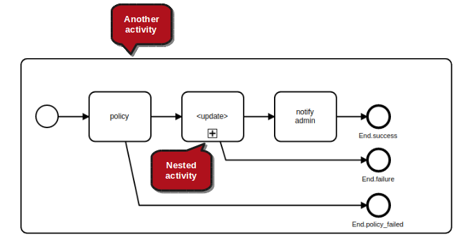
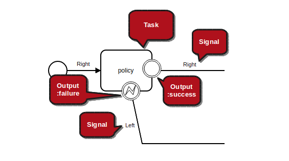
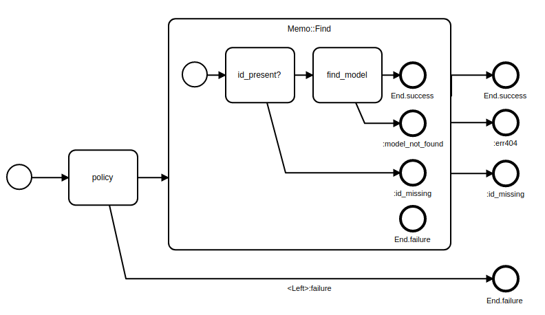
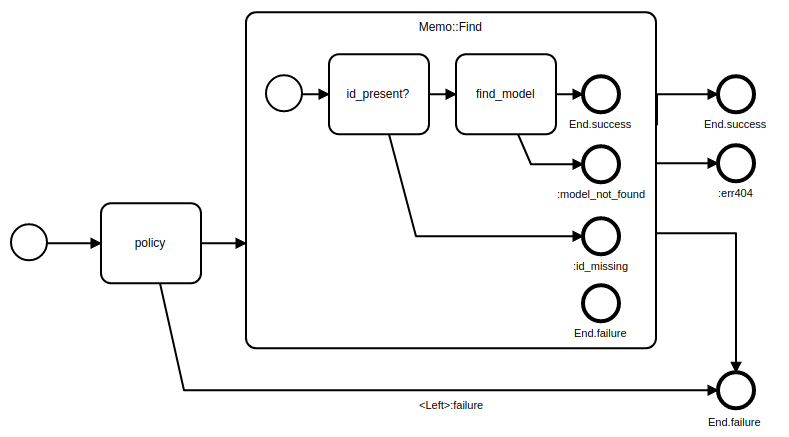
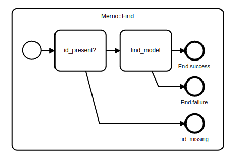
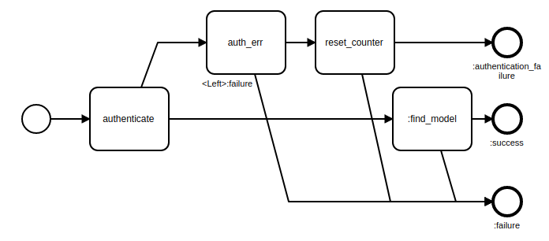
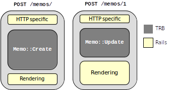

What is Trailblazer?
The idea of 2.1 is: If you can't draw it, you can't code it.
Activity
The activity gem provides the DSL to define workflows, and the runtime objects to execute the latter.
Overview
module Memo::Update
extend Trailblazer::Activity::Railway()
module_function
#
# here goes your business logic
#
def find_model(ctx, id:, **)
ctx[:model] = Memo.find_by(id: id)
end
def validate(ctx, params:, **)
return true if params[:body].is_a?(String) && params[:body].size > 10
ctx[:errors] = "body not long enough"
false
end
def save(ctx, model:, params:, **)
model.update_attributes(params)
end
def log_error(ctx, params:, **)
ctx[:log] = "Some idiot wrote #{params.inspect}"
end
#
# here comes the DSL describing the layout of the activity
#
step method(:find_model)
step method(:validate), Output(:failure) => End(:validation_error)
step method(:save)
fail method(:log_error)
end
Invoking an activity works via its
callmethod. Thectxparameter can be any kind of data structure.
ctx = { id: 1, params: { body: "Awesome!" } }
event, (ctx, *) = Memo::Update.( [ctx, {}] )
After the activity finishes, you can access computed data via the returned
ctxobject. Thesignalis the end event the activity stopped at.
pp ctx #=>
{:id=>1,
:params=>{:body=>"Awesome!"},
:model=>#<struct DocsActivityTest::Memo body=nil>,
:errors=>"body not long enough"}
puts signal #=> #<Trailblazer::Activity::End semantic=:validation_error>
An activity defines a workflow for a specific business process. This can be any level of granularity, from the entire lifecycle of a user object, or validating and persisting input from a form, down to parsing and coercing a specific fragment from a document. In Trailblazer, activities are the major building block for logic.
Per convention, activities are modules and not classes. A module in Ruby is just a namespace and not automatically supposed to be used as a mixin, which we refrain from. Instead, think of an activity module as a module in Elixir, which is simply a collection of stateless functions. Modules have two major benefits.
- You can not subclass actitivies. This might sound counter-intuitive, but activity gives you the much more sustainable tool of compositions.
- Modules provide
module_functionto declare every method as a class method. This makes the module more readable and allows to usemethodto attach a module method to a step.
Example
In the exemplary Memo::Update activity, the first line extends your module and imports the DSL. Activity ships with three built-in strategies to build workflows: Path is designed for more linear flows, Railway is the railway-oriented two tracks flow, and FastTrack is the extended railway with two more "fast" tracks which was tried and tested in Trailblazer for two years and more.
In the upper part sits the implementation of the actual steps. Note that these don't have to be located in the same module or class as the activity definition - this is just convenient in many cases. All methods expose the step interface, which is the default.
In the lower part, the actual DSL defines the activity's flow. Check out the rendered diagram, it helps to understand the DSL.

The following principles apply.
- Each box in this diagram is called a task or step, depending on its interface, but we're not too strict here.
- Each box - in code - is represented by a callable object you provide (usually that's a
methodas seen to the right, or another nestedActivity). - Depending on the return value of the task code, the next connection is picked.
- Per default, the
ctxobject is passed through from task to task and allows to write state. - An activity stops when hitting an end event.
Activities are incredibly simple, even though the DSL might look very powerful. Don't worry, the DSL code is completely separated from the run-time code, and you only need to understand a handful of concepts such as task- and step interface, outputs, semantics, and colors (also known as polarizations) and you will be able to write and maintain more complex workflows easily.
Anatomy
An activity is a set of tasks, with at least one start event and one or multiple end events. A task can be any Ruby callable that follows the task interface, and it can even be another activity itself.

In other words, an activity is a container, and tasks are the boxes contained in it. What you see above is actually an incorrect representation, as it doesn't name outputs or signals. We use it all the time, though, since those outputs can be inferred easily. Intuitively, you understand what this activity will do, and that the save task can have a successful and a failing outcome.
Here's a another representation of a different activity, one that uses the above activity we just defined as a nested task.

Nested activities (in BPMN they're called subprocess), are marked by the [+] symbol in the box. As you can see, both outgoing connections from the nested <update> activity need to be wired to something in the outer workflow. In this example, the "failure" output of the nested <update> activity is wired directly to the End.failure end event.
Let's look at this diagram again, with correct annotations, outputs and semantics. All those new terms will become a bit clearer in a bit.

Oh, wow, that's actually more confusing. Anyway, this diagram contains all annotations used in Trailblazer's activities: outputs with semantic and signals. For a better understanding of the whole picture we should break it down to one task, first.

The
policytask returning a specific signal. This is the low-level version of a task, called the task interface.
def policy( (ctx, flow_options), **)
signal = ctx[:current_user].nil? ?
Trailblazer::Activity::Left :
Trailblazer::Activity::Right
return signal, [ctx, flow_options]
end
A task can have different outputs. Every output is defined by a semantic (for example :success) and a signal.
Both semantic and signal are completely arbitrary and you can use whatever you feel makes sense. Historically, Trailblazer uses the Right signal for outputs with the :success semantic, and Left for :failure. Also note that even the semantic (e.g. :success) doesn't have any meaning except for the modelling. Oh, and you're not limited to two outputs: a task may have as many outputs as you need.
Now, why not relate this to some code? Remember, a plain task is always a piece of Ruby code. The task can pick what output to take by returning the output's respective signal.
With nested activities, it's slightly different. Since the last task will be an end event, it's this very end event to decide what signal to emit. End events always return themselves as the signal. This allows to wire a nested activity's ends to specific paths in the outer diagram, the way we've modelled it in the example above and in the next paragraph.
Outputs and Semantics
module Memo::Create
extend Trailblazer::Activity::Path()
task method(:policy),
Output(:failure) => "log_error"
task method(:log_error), id: "log_error", magnetic_to: [],
Output(:success) => End(:policy_failure)
end
Both tasks could be wired without knowing what signal they emit, just by referencing standard semantics of their outputs.
Having defined tasks with outputs, where an output emits a specific signal, an activity modeller's job now is to specify what output gets connected to what further connection.
This is where the semantic of an output comes into play. A modeller can connect, say, the :failure output of a task with an error handler, and then with an erroring end event, without knowing about the underlying signals. This allows Trailblazer to expose a generic modelling API.

All mentioned modelling concepts will be explained in detail in the following sections.
Output
The entire DSL is only about outputs, or about connecting outputs to tasks, to be more accurate. That's why we spend a lot of time working out the best way to model activities.
Sometimes, we omit the circle and just annotate the outgoing arrow with the signal tuple.
A task can return any signal with the task interface. The signal dictates which physical output to take.
def policy( (ctx, flow_options), **)
signal = ctx[:current_user].nil? ?
Trailblazer::Activity::Left :
Trailblazer::Activity::Right
return signal, [ctx, flow_options]
end
The DSL automatically assigns default outputs if none are specified.
module Memo::Create
extend Trailblazer::Activity::Railway() # we're using the Railsway here
step method(:policy)
#=> defaults:
# outputs: {
# success: Output{<Right>:success},
# failure: Output{<Left>:failure}
# }
end

On the right-hand side, you see a policy task that returns either a Right or a Left signal. Remember, tasks can return just anything as a signal. Since for callable Ruby objects (which is what tasks are), there's no way to define what outputs a task comes with, it's the DSL's job to define a set of outputs of a specific task.
The example only works because the DSL automatically assigns outputs if none are given.
When using task or other DSL methods to add a task, depending on the strategy, the DSL will automatically provide default outputs as you see on the right. Since, now, the outputs are provided, the DSL strategy will now automatically connect the outputs to the next task.
For example, with Path(), a :success output will be wired to the next task call. In a Railway, the same happens, plus a :failure output will be connected to the error track for you.
Output: Defaults for Plain Task
With
Path(), thetaskmethod defaults:outputsto one:successoutput (left diagram).
module Memo::Create
extend Trailblazer::Activity::Path()
task method(:policy) #, outputs: { success: Output{<Right>:success} }
end
With
Railway(), the default outputs will beRightandLeft(middle diagram).
module Memo::Create
extend Trailblazer::Activity::Railway() # we're using the Railsway here
step method(:policy)
With
FastTrack()and thefast_track: trueoptions, default outputs will beRight,Left,PassFastandFailFast(right diagram). This gives you four possible default outputs.
module Memo::Create
extend Trailblazer::Activity::FastTrack() # we're using the Railsway here
step method(:policy), fast_track: true
When inserting a task via the DSL, everything works identical to the behavior when adding Nested activities except for one thing: Since the DSL can't query a callable Ruby object for its outputs, it defaults the outputs as follows.
In a Path()-based activity, the task method always adds a :success output with a Right signal (left diagram).

In a Railway() or FastTrack() activity, the step method adds :success and :failure. The latter emitting a Left signal (middle diagram). With FastTrack and the :fast_track option, you get up to four outputs predefined (right diagram).
Note that adding :outputs to a task doesn't mean they will be connected, it's the DSL's job now to wire those to the next task, unless you specify the connection explicitly.
Output: Subprocess
Activities can be nested. This is usually done with the Subprocess macro that will automatically define :outputs for the nested activity by querying the latter via its output method. Subprocess assumes that the nested activity follows the Activity interface.
Suppose the following Update::Model activity needs to be nested into another activity Update.
module Memo::Update
extend Trailblazer::Activity::Railway()
step method(:policy)
step Subprocess( Update::Model )
#=> defaults:
# outputs: {
# success: Output{<Update::Right>:success},
# failure: Output{<Update::Left>:failure},
# failure_validation: Output{<Update::ValidationErr>:failure_validation},
# }
end
Non-standard semantics can be re-routed manually.
module Memo::Update
extend Trailblazer::Activity::Railway()
step method(:policy)
step Nested( Update::Model ), Output(:failure_validation) => Track(:failure)
end
The Railway() strategy will now automatically connect outputs with semantics it knows. Note that the failure.validation output can't be auto-connected since the semantic is unknown.

You need to specify that connection manually using Output(:failure_validation). In the example to the right, we let the DSL take care of wiring this output to a specific task, and just say "connect Update's validation failure output to the failure track".

You now have two outputs going to the same next step, which is actually fine in both BPMN and Trailblazer. It's possible to rewire by color, to a specific next task, or to an existing or new end.
Output: Output option
Output: Id
Use an
:idto reference a particular task.
module User::Signin
extend Trailblazer::Activity::Railway()
# ...
step method(:find_by_omniauth)
fail method(:find_by_email), Output(:success) => :sign_in
step method(:sign_in), id: :sign_in
fail method(:create)
end
If a task needs to be connected to another specific task, you can reference the target using its id, resulting in something like Output(:semantic) => :id_of_target. Note that the ID can be anything, but it has to be assigned on the target task.

In this example, if a sign in request can't be handled via Omniauth (because the user didn't attempt to sign in via Github or Facebook), the submitted email is searched, instead. If that was successful, the user is signed in.
Output: Color
Output: End
Definition
SomeModule.method(:find)
Call
Task Interface
Memo::Find.outputs[:success] Memo::Find.outputs[:failure]
Step Interface
Activity Interface
call outputs to_h
Composition
A main intent of Trailblazer's activities is reusability. As opposed to TRB 1.x, where inheritance was overused, we now encourage compositions. You have two tools to reuse activities with others and compose more complex workflows.
- The Merge API allows to "copy" activities or parts of it into others and hence merge them.
- You can use nesting to call acitivies from activities and maintain cleanly encapsulated flows.
Composition: Merge API
Composition: Subprocess
To model more complex activities and maximize reusability, a task can be an activity itself. This is called nesting, in BPMN, a nested activity is called Subprocess.
Automatic Wiring
The nested activity is a simple Railway with two ends.
module Memo::Find
extend Trailblazer::Activity::Railway()
# ...
step method(:id_present?)
step method(:find_model)
end
The composer is a Railway as well, and automatically "understands" how to wire the nested's ends.
module Memo::Update
extend Trailblazer::Activity::Railway()
# ...
step method(:policy)
step task: Memo::Find, outputs: Memo::Find.outputs
end
Since all activities expose the Task interface, you can nest by simply providing the contained activity as a task.
When the nested activity doesn't have any custom ends, you can provide the :outputs option along with the nested's outputs without any need to manually reconnect. The outer Railway (the container) automatically understands how to connect the nested's ends.

The automatic wiring of the inner activity works by matching semantics and colors: the inner :success end get connected to the :success path, the :failure end to the :failure path of the outer Railway.
Manual wiring
By adding two custom ends, the inner activity now has four ends.
module Memo::Find
extend Trailblazer::Activity::Railway()
# ...
step method(:id_present?), Output(:failure) => End(:id_missing)
step method(:find_model), Output(:failure) => End(:model_not_found)
end
You can grab the nested ends' outputs using
outputs[:semantic]and wire them to custom connections.
module Memo::Update
extend Trailblazer::Activity::Railway()
# ...
step method(:policy)
step task: Memo::Find,
Memo::Find.outputs[:success] => Track(:success),
Memo::Find.outputs[:model_not_found] => End(:err404),
Memo::Find.outputs[:id_missing] => End(:id_missing)
end
Let's assume the nested, inner activity Memo::Find had three ends, with specific ends to indicate what went wrong, and where (see End). These ends have custom semantics :id_present and :model_not_found and hence can't be connected automatically. You need to manually wire them to other tasks, tracks, or ends.

Now, all ends from the inner activity have a matching end on the outside. This helps to manage the flow better, but is not always necessary.
Connect to color
Instead of using
End, you can also wire a nested output to a color, e.g. the outer:failuretrack.
module Memo::Update
extend Trailblazer::Activity::Railway()
# ...
step method(:policy)
step task: Memo::Find,
Memo::Find.outputs[:success] => Track(:success),
Memo::Find.outputs[:model_not_found] => End(:err404),
Memo::Find.outputs[:id_missing] => Track(:failure)
end
Sometimes, you might want to pool multiple inner ends or redirect them onto a track, instead of maintaining one end on the outside for each inner one. In this example, we redirect the :id_missing end to the generic :failure track.

The :id_missing end is now connected to the :failure track, which happens to run directly into its end. Keep in mind that you can use all mechanics from Output() and wire nested ends to just anything.
Subprocess
Use the
Subprocess()macro if you want to save typing and take advantage ofOutput().
module Memo::Update
extend Trailblazer::Activity::Railway()
# ...
step method(:policy)
step Subprocess( Memo::Find ),
Output(:model_not_found) => End(:err404),
Output(:id_missing) => Track(:failure)
end
The activity gem provides the Subprocess macro as a short-cut when nesting activities. It will produce an identical circuit as the one above by automatically extracting and passing :outputs to the DSL. You may then use Output() to reference outputs in a more convenient way, and without having to connect automatically matched ones.
End
The
End()helper in combination withOutput()connects an output with a newly created end.
module Memo::Find
extend Trailblazer::Activity::Railway()
# ...
step method(:id_present?), Output(:failure) => End(:id_missing) # new semantic.
# step method(:find_model), Output(:failure) => End(:failure) # existing semantic. DOESN'T WORK, YET.
step method(:find_model), Output(:failure) => "End.failure" # existing end.
end
Outgoing connections from a task can either go to another task, or to an end event. Every strategy comes with one or more default ends, for example Railway() has two ends, respectively one with :success and one with :failure semantic.
The End() helper allows you to quickly connect a particular task to a new end.
This is incredibly helpful if further processing doesn't make sense after this task "failed" (or whatever made you choose hitting the new end), and you want to know "what happened". For instance, a policy breach doesn't need to error out generically, but should end in a separate end with a specific semantic (e.g. :policy_breach). When running that activity returns the policy breach end, you know the execution stopped after the policy task.
On the right side, check out how to use End() with Output().
The respective diagram will have three ends.

Event
Always build end instances via the
Endbuilder.
evt = Trailblazer::Activity::End( semantic: :success_story )
The returned signal is
evtitself.
signal, (ctx, flow_options) = evt.( [ctx, flow_options] )
signal #=> #<Trailblazer::Activity::End semantic=:success_story>
Use
Event#to_hto decompose.
evt.to_h #=> { semantic: :success_story }
Events are tasks with special semantics.
Startevents do nothing, and always return theRightsignal. Every activity begins with one or multiple start events.Endevents usually don't execute anything, either. An end event instance always returns itself as the signal. This allows to wire them to ongoing connections when nesting. End events mark the end of activity paths, and might also be used for suspending an activity as we do in theworkflowgem.
Magnetism
Custom Track
Use
magnetic_to:andOutput()to change the polarizations.
module Memo::Create
extend Trailblazer::Activity::Railway()
# ...
step method(:authenticate), Output(:failure) => Track(:auth_failed)
step method(:auth_err), magnetic_to: [:auth_failed], Output(:success) => Track(:auth_failed)
step method(:reset_counter), magnetic_to: [:auth_failed], Output(:success) => End(:authentication_failure)
step method(:find_model)
end
All builder strategies (Path, Railway, etc.) provide defaults for outputs and track "colors". These you can override, which allows to easily branch out custom tracks to handle conditionals or to model polymorphic behavior.
The :magnetic_to option is an array of polarization colors for the task's inputs (also called minus pole) and defines what "open" colors the task will "snap to".
With Output(), you map outputs to colors, which is what the coming inputs will "snap to". A tuple of an output and a color is called plus pole.

The resulting circuit has three tracks. We didn't put anything on the :failure track, but it is still there. Note that, in a Railway, mapping the :success output does create the desired plus pole. However, the :failure output, per default, is still pointing to the :failure track and will result in deviation to it should auth_err or reset_counter return the Left signal.
Path
The
Path()helper lets you build a custom track.
module Memo::Create
extend Trailblazer::Activity::Railway()
# ...
step method(:authenticate), Output(:failure) => Path() do
task Memo::Create.method(:auth_err)
task Memo::Create.method(:reset_counter), Output(:success) => End(:authentication_failure)
end
step method(:find_model)
end
Instead of having to pass around the track color of the custom track, you can use the Path() helper to branch out and build an additional linear flow.
The circuit looks identical to a custom track.
A path will always end in an end event with a :success semantic, which is why the last task is explicitly connected via End(). This results in a track end where you define the semantic.
Path: End Semantic
The
:end_semanticoption allows reusing the default end with a semantic you pick.
module Memo::Create
extend Trailblazer::Activity::Railway()
# ...
step method(:authenticate), Output(:failure) => Path( end_semantic: :authentication_failure ) do
pass Memo::Create.method(:auth_err)
pass Memo::Create.method(:reset_counter)
end
step method(:find_model)
end
The Path() helper accepts a :end_semantic option to assign a custom semantic.
The circuit looks identical to a custom track.
Join
module Memo::Upsert
extend Trailblazer::Activity::Path()
# ...
task method(:find), Output(Trailblazer::Activity::Left, :failure) => Path() do
task Memo::Upsert.method(:create)
task Memo::Upsert.method(:populate), Output(:success) => "save"
end
task method(:save), id: "save"
end
An extra path can be joined with the outer activity by pointing the last (or any other) task to an existing task in the outer activity.

Only when find returns the Left signal, the extra path is taken.
See also: Output: ID
Operation
Example for an operation that doesn't use any TRB macros. It creates a fresh
Memoinstance.
class Memo::Operation < Trailblazer::Operation
step :create_model
step :validate
step :save
step :notify
def create_model(ctx, **)
ctx[:model] = Memo.new
end
def validate(ctx, params:, **)
if params[:body].size < 10
ctx[:errors] = "something wrong with :body"
return false
end
end
def save(ctx, params:, model:, **)
model.body = params[:body]
model.save
end
def notify(ctx, model:, **)
Notifier.(model)
end
end
An operation is the essential element that was introduced with the first Trailblazer book. It indeed is the most popular concept from the TRB architectural style and since has found its way into many other frameworks.
The goal of an operation is to encapsulate all business logic of one feature in an application. Since features (or functions) in web applications are often, very often, mapped to controller actions, sometimes operations are compared to controller actions, orchestrating all logic related to business except for HTTP-related code.

In particular, this means that neither HTTP code nor rendering is part of an operation.
Single Entry Point
The public
Operation.callmethod makes invoking operations really straight-forward.
result = Memo::Create.( params: { body: "too short!" } )
result.success? #=> false
result[:model].body #=> nil
Usually, operations are called from a controller. For example, in Rails, this could look as follows.
class MemosController < ApplicationController
def create
result = Memo::Create.( params: params, current_user: current_user )
return redirect_to "/dashboard" if result.success?
end
end
You can imagine an operation being the single entry point to invoke a function of your application such as creating a memo, viewing a comment, or generating a PDF report. The great thing about this encapsulated asset is that you can use it for different layers of your application.
- Operations are the single entry point in controllers.
- They can also be used in Rake files or CLI tools, and do exactly the same as they'd do in a controller.
- Instead of factories that always create leaky test states, chains of operations are called to produce solid test scenarios that are identical to production environments.
Operation vs. Activity
In Trailblazer 1.x and 2.0, the Operation was the central notion, all was build around it. In Trailblazer 2.1, operations still exist, but they're just one piece in a huge clockwork of activities. In fact, an operation is not more than a extended API around an activity. Internally, it creates, maintains and runs an activity.
You could build a Trailblazer application without using Trailblazer::Operation. This especially makes sense when using the workflow process engine. However, until all applications are running with workflows, we will keep the operation like a good friend.
The following is different from an activity.
- INHERITANCE An operation is a class, not a module. That means, you can use inheritance to derive subclasses. These will inherit step methods and activity wirings.
- STEP DEFINITIONS Operations provide the
step :some_methodsyntax, which in turn allows to define the activity wiring before implementing the methods. - CALL API When invoking an operation using
Create.(), you have the "convenient" interface: pass in:paramsand other variables, and the operation will automatically create aContextobject. This is handy when calling an operation in a controller, or a test, but gets into your way when using an operation in a compound of other activities. - RESULT Also, the operation
callwill return aResultobject, whereas an activity simply returns following the circuit interface. - EXTENDED RAILWAY While activities can choose their DSL strategy, an operation will always be a
FastTrackrailway with four tracks. This has been established in versions before 2.1. - MACROS Most macros are sitting in the
Trailblazer::Operationnamespace, but you can still use them in activities.
Call
my_params = { body: "Awesome!", title: "Eh, hi" }
result = Memo::Create.(
params: my_params,
current_user: User.find(1)
)
An operation has a very convenient interface when being used in public. It is invoked with the call method and accepts a hash of variables. The passed tuples will automatically be converted into a Trailblazer::Context object that is passed through the steps as the ctx object.
class Memo::Create < Trailblazer::Operation
step :create_model
def create_model(ctx, current_user:, **)
puts ctx[:params] #=> { body: "Awesome!", title: "Eh, hi" }
puts ctx[:current_user] #=> #<User name: "Timo">
puts current_user #=> #<User name: "Timo">
end
end
As always, in the operation's steps, you can use the ctx object directly plus keyword arguments. Every step receives the same ctx instance.
When calling an operation, a Result object is returned. This is different to the lower-level activity interface, which returns following the circuit interface.
The call method also accepts containers, such as a dry-container. Refer to the container section to learn more about injecting additional application dependencies.
Result
result = Memo::Create.( params: params, current_user: User.find(1) )
You can ask about the outcome of the operation via
success?andfailure?.
result.success? #=> true
result.failure? #=> false
You can query the result object for all variables in
ctx.
result[:model] #=> #<Memo body="Awesome!">
result["contract.default"] #=> #<Reform::Form ...>
result[:current_user] #=> #<User id=1>
The result object returned from Operation.call is a feature of operations, only. It simplifies the API slightly and helps to interpret the outcome of the operation in a convenient way.
The result object is the only way for communicating internals to the outer side, where you, the caller, sits. This is per design: Trailblazer doesn't want you to get the operation instance or any other state, because it will lead to problems.
Whatever is written to the ctx object passed from step to step will be readable via the result object. String keys and symbol keys are different. Note that macros, other steps or nested activities might have written to ctx as well.
Even though you could change state (or write) on the result object, please treat it as immutable. If you need to pass on transformed state to the rendering layer, use a decorator object.
Again, the interpretation of the outcome is completely up to you. The result object represents what happened, and not what should happen now. For a generic way of interpreting results, use endpoints.
DSL
class Memo::Update < Trailblazer::Operation
step :find_model, Output(:failure) => End(:model_not_found)
step :update
fail :db_error
step :save
# ...
end
The operation exposes a minimal DSL to create the underlying activity. An operation always maintains a FastTrack activity and hence allows to error out, branch, etc. The operation's DSL is identical to Activity::FastTrack.

All semantics are identical, in particular, adding steps works via step, pass and fail. You may use :pass_fast, :fail_fast and :fast_track and leverage four tracks per default.
Note that the step methods do not have to reside in the operation class, you can also use the Module.method(:find_model) trick to compose logic in operations.
ID
class Memo::Update < Trailblazer::Operation
step Finder.method(:find_module), id: "find_module"
# ...
end
The DSL tries to assign valid :ids to every step. Make sure to set a good name for steps that you're planning to override in subclasses or when composing: this is part of your public-private API.
Per convention, IDs are "strings".
Inheritance
Container
Testing
Example of a Minitest operation test.
describe Memo::Create do
it "creates a sane Memo instance" do
result = Memo::Create.( params: { body: "Enjoy an IPA" } )
result.success?.must_equal true
result[:model].body.must_equal "Enjoy an IPA"
end
end
The encapsulated concept of operations, or activities in general, makes them incredibly simple to test. You do exactly the same you would do in a controller: you call them.
By asserting the result object and making sure the side-effects are desired, you create rock-solid components that will do exactly the same in tests and in production. Also, an operation has no idea in what environment its called, allowing you to test it in Minitest, Rspec or whatever testing framework you fancy.
Operations can also be used as factories.
Check out the trailblazer-test gem for advanced testing strategies, dependency injections instead of mocking, and factory chains.
We're working on an RSpec adapter, too.
Debugging
Tracing
taskWrap
DSL: Sequence Options
In addition to wiring options, there are a handful of other options known as sequence options. They configure where a task goes when inserted, and helps with introspection and tracing.
Sequence Options: id
Assign names to tasks via the
:idoption, so overriding and debugging is easier.
class Memo::Create < Trailblazer::Operation
step :create_model, id: "create_memo"
step :validate, id: "validate_params"
step :save
# ...
end
You can name each step using the :id option. Keep in mind that names are part of your public API and should be "forever".
This is advisable when planning to override a step via a module or inheritance or when reconnecting it. Naming also shows up in tracing and introspection. Defaults names are given to steps without the :id options, but these might be awkward sometimes.
IDs can be beneficial for introspection.
Trailblazer::Operation.introspect( Memo::Create )
#=> [>create_memo,>validate_params,>save]
Sequence Options: delete
When it's necessary to remove a task, you can use :delete.
class Memo::Create::Admin < Memo::Create
step nil, delete: "validate_params", id: ""
end
The :delete option can be helpful when using modules or inheritance to build concrete operations from base operations. In this example, a very poor one, the validate task gets removed, assuming the Admin won't need a validation
Trailblazer::Operation.introspect( Memo::Create::Admin )
#=> [>create_model,>save]
All steps are inherited, then the deletion is applied, as the introspection shows.

Sequence Options: before
To insert a new task before an existing one, for example in a subclass, use :before.
class Memo::Create::Authorized < Memo::Create
step :policy, before: "create_memo"
# ...
end
The circuit now yields a new policy step before the inherited tasks.

Sequence Options: after
class Memo::Create::Logging < Memo::Create
step :logger, after: "validate_params"
# ...
end
Trailblazer::Operation.introspect( Memo::Create::Logging )
#=> [>create_memo,>validate_params,>logger,>save]
To insert after an existing task, you might have guessed it, use the :after option with the exact same semantics as :before.
The task is inserted after, as the introspection shows.
Sequence Options: replace
class Memo::Update < Memo::Create
step :find_model, replace: "create_memo", id: "update_memo"
# ...
end
Trailblazer::Operation.introspect( Memo::Update )
#=> [>update_memo,>validate_params,>save]
Replacing an existing task is done using :replace.
Replacing, obviously, only replaces in the applied class, not in the superclass.
DSL: Group
The :group option is the ideal solution to create template operations, where you declare a basic circuit layout which can then be enriched by subclasses.
Trailblazer::Operation.introspect( Memo::Create )
#=> [>create_memo,>validate_params,>save]
class Memo::Operation < Trailblazer::Operation
step :log_call, group: :start
step :log_success, group: :end, before: "End.success"
fail :log_errors, group: :end, before: "End.failure"
# ...
end
The resulting circuit, admittedly rather useless, will look as follows.

Subclasses can now insert their actual steps without any sequence options needed.
class Memo::Create < Memo::Operation
step :create_model
step :validate
step :save
# ...
end
Since all logging steps defined in the template operation are placed into groups, the concrete steps sit in the middle.

It is perfectly fine to use the :group and other sequence options again, in subclasses. Also, multiple inheritance levels will work.
Patterns
no god object only flow control Orchestration
Recover
class Memo::Upload < Trailblazer::Operation
step :upload_to_s3
fail :upload_to_azure, Output(:success) => :success
fail :upload_to_b2, Output(:success) => :success
fail :log_problem
# ...
end
The recover tasks themselves can now return a boolean to direct the flow.
class Memo::Upload < Trailblazer::Operation
# ...
def upload_to_s3(ctx, s3:, file:, **)
s3.upload_file(file) #=> returns true or false
end
end
Error handlers on the left track are the perfect place to "fix things". This means you might want to return to the right track. We call this a recover task. For example, if you need to upload a file to S3, if that doesn't work, try with Azure, and if that still doesn't play, with Backblaze. This is a common pattern when dealing with external APIs.
You can simply put recover steps on the left track, and wire their :success output back to the right track (which the operation knows as :success).
The resulting circuit looks as follows.

The Output(:success) DSL call will find the task's :success-colored output and connect it to the right (:success) track.
Decider
class Memo::Upsert < Trailblazer::Operation
step :find_model, Output(:failure) => :create_route
step :update
step :create, magnetic_to: [:create_route]
step :save
# ...
end
If you want to stay on one path but need to branch-and-return to model a decision, use the decider pattern.
In this example, the success track from find_model will go to update whereas the failure output gets connected to create, giving the circuit a diamond-shaped flow.

Note that we're using properties of the magnetic API here: by polarizing (or coloring) the failure output of find_model to :create_route (which is a random name we picked), and making create being attracted to that very polarization, the failure output "snaps" to that task automatically.
The cool feature with the magnetic API in this example is that you don't need to know what is the specific target of a connection, allowing to push multiple tasks onto that new :create_route track, if you needed that.
Doormat Step
Very often, you want to have one or multiple "last steps" in an operation, for instance to generically log errors or success messages. We call this a doormat step.
Doormat Step: Before
class Memo::Create < Trailblazer::Operation
step :create_model
step :log_success
step :validate, before: :log_success
step :save, before: :log_success
fail :log_errors
# ...
end
The most elementary way to achieve this is using the :before option.
Note that :before is a DSL option and not exactly related to the wiring API. Using this option, the inserted step will be "moved up" as if you had actually called it before the targeted :before step.
Doormat Step: Group
class Memo::Create < Trailblazer::Operation
step :create_model
step :log_success, group: :end, before: "End.success"
step :validate
step :save
fail :log_errors, group: :end, before: "End.failure"
# ...
end
An easier way to place particular steps always into the end section is to use the :group option.
The resulting Memo::Create's circuit is identical to the last example.
Note how this can be used for "template operations" where the inherited class really only adds its concrete steps into the existing layout.
Trailblazer
File Structure
Loader
Short-form, needs our loader.
class Memo::Create < Trailblazer::Operation
end
Normal, works with Rails autoloader out-of-the-box.
module Memo::Operation
class Create < Trailblazer::Operation
end
end
Disable Loader
Memos::Application.config.trailblazer.use_loader = false
In Rails, the Trailblazer::Loader is only necessary when you want to use the short-form for operations. You can disable our loader entirely should you follow the Rails naming conventions.
Test
Operation tests
Factory
Dependency Injection
Workflow
Events
In Trailblazer, triggering a throwing event via the process engine always implies resuming a process that was stopped earlier. It resumes at the resume event, which is a catching event.
Explicit Event
{
uuid: "66f1f0b1-7fe0-46b9-85dd-37dcea3fde51",
resume_path: [:ready_for_sign_in, :user_resume],
data: {
user_id: 1,
group_id: 2
}
}
Example of an explicit event that gets persisted to be triggered at a later point in time.
You can let Trailblazer maintain all open (or triggerable) events instead of managing state yourself. Every throwing event is persisted (Mysql, Postgres, Redis, etc), those who know the event UUID can trigger this event and continue the session, potentially avoiding permission checks and authentication.
Per default, the process engine will assume it's "ok" to continue from the throwing event.
A setup with explicit events emulates a persistent environment, where a process runs in a "real" state machine from beginning to end. This is found in many Java BPMN implementations. In Trailblazer, whatsoever, until we implement a persistend process engine, we decided this semi-persistent setup is extremely flexible, quite fast and a good trade-off.
An explicit event is always an instance of Event::Throwing.
Implicit Event
Trailblazer::Workflow::Event.implicit(
[:ready_for_signin],
{ user_id: user.id }
)
Example for creating an ad-hoc event instance.
In case you're migrating from a legacy app, or simply don't want to maintain another table for sessions, events can also be inferred ad-hoc, for example in a controller action. The event data and state can be computed from arbitrary (persisted) data. This is called an implicit event.
Every implicit event is an instance of Event::Throwing.